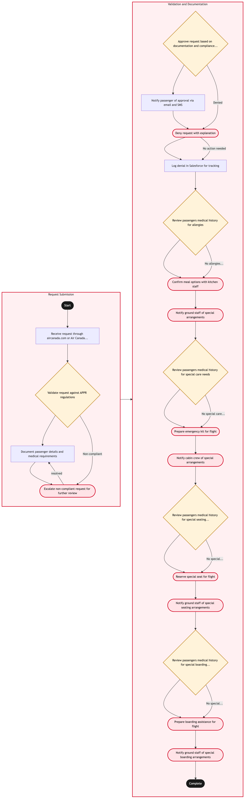

Updated 2026-08-20
Special Meal and Medical Clearance
Process flow
Click to zoom

Process steps
▼
Phase 1 — Request Submission
4 steps
| Step | Activity | Role | System | Input | Output | KPI | Dec | Exc | Pain point |
|---|---|---|---|---|---|---|---|---|---|
| 1.1 | Receive request through aircanada.com or Air Canada Mobile App | Customer Service Agent | Air Canada Mobile App, aircanada.comU | Passenger's special meal or medical requirement details | Request logged in Salesforce Service Cloud | Response time within 10 minutes from submission | N | N | Delays in response can lead to customer dissatisfaction and potential complaints. |
| 1.2 | Validate request against APPR regulations | Special Services Agent | Salesforce Service CloudA | Logged request details | Validation result (compliant or non-compliant) | Validation completed within 5 minutes of reception | Y | N | Non-compliance can lead to fines and reputational damage. |
| 1.3 | Document passenger details and medical requirements | Special Services Agent | Salesforce Service CloudA | Validated request | Detailed case record in Salesforce | Documentation completed within 3 minutes of validation | N | N | Incomplete documentation can lead to miscommunication during flight. |
| 1.4 | Escalate non-compliant request for further review | Special Services Manager | Salesforce Service CloudA | Non-compliant case details | Escalation to compliance team | Escalation within 1 hour of validation failure | N | Y | Delayed escalation can lead to increased backlog and potential legal action. |
▼
Phase 2 — Validation and Documentation
16 steps
| Step | Activity | Role | System | Input | Output | KPI | Dec | Exc | Pain point |
|---|---|---|---|---|---|---|---|---|---|
| 2.1 | Approve request based on documentation and compliance check | Special Services Manager | Salesforce Service CloudA | Detailed case record | Approval status (approved or denied) | Approval decision within 2 hours of documentation completion | Y | N | Denial without proper justification can lead to customer complaints. |
| 2.2 | Notify passenger of approval via email and SMS | Customer Service Agent | Air Canada Mobile App, aircanada.comU | Approved case details | Confirmation sent to passenger | Notification within 30 minutes of approval | N | N | Missed notifications can lead to confusion and missed flight opportunities. |
| 2.3 | Deny request with explanation | Special Services Manager | Salesforce Service CloudA | Detailed case record | Denial letter sent to passenger | Denial within 1 hour of approval decision | N | Y | Improper denial can lead to customer complaints and potential legal action. |
| 2.4 | Log denial in Salesforce for tracking | Special Services Manager | Salesforce Service CloudA | Denial letter details | Updated case record in Salesforce | Logging completed within 30 minutes of denial | N | N | Missing logs can lead to incomplete audit trails. |
| 2.5 | Review passenger's medical history for allergies | Special Services Agent | Salesforce Service Cloud, Allergy Management SystemU | Passenger details | Allergy information and cross-referenced meal options | Review completed within 10 minutes of approval | Y | N | Incorrect allergy information can lead to passenger discomfort or medical issues. |
| 2.6 | Confirm meal options with kitchen staff | Special Services Agent | Air Canada Mobile App, aircanada.comU | Cross-referenced meal options | Confirmation of availability and preparation status | Confirmation within 5 minutes of review completion | N | Y | Unavailability of meals can lead to passenger dissatisfaction. |
| 2.7 | Notify ground staff of special arrangements | Special Services Agent | Air Canada Mobile App, aircanada.comU | Confirmation details | Notification sent to ground crew | Notification within 3 minutes of confirmation | N | Y | Missed notifications can lead to miscommunication during flight. |
| 2.8 | Review passenger's medical history for special care needs | Special Services Agent | Salesforce Service Cloud, Medical Care Management SystemU | Passenger details | Care instructions and support requirements | Review completed within 10 minutes of approval | Y | N | Incorrect care information can lead to passenger discomfort or medical issues. |
| 2.9 | Prepare emergency kit for flight | Special Services Agent | Air Canada Mobile App, aircanada.comU | Care instructions and support requirements | Emergency kit prepared | Kit preparation within 5 minutes of review completion | N | Y | Missing items in emergency kits can lead to passenger discomfort or medical issues. |
| 2.10 | Notify cabin crew of special arrangements | Special Services Agent | Air Canada Mobile App, aircanada.comU | Emergency kit details | Notification sent to cabin crew | Notification within 3 minutes of preparation completion | N | Y | Missed notifications can lead to miscommunication during flight. |
| 2.11 | Review passenger's medical history for special seating needs | Special Services Agent | Salesforce Service Cloud, Seating Management SystemU | Passenger details | Seating instructions and support requirements | Review completed within 10 minutes of approval | Y | N | Incorrect seating information can lead to passenger discomfort or medical issues. |
| 2.12 | Reserve special seat for flight | Special Services Agent | Air Canada Mobile App, aircanada.comU | Seating instructions and support requirements | Reserved seat details | Reservation within 5 minutes of review completion | N | Y | Unavailability of seats can lead to passenger dissatisfaction. |
| 2.13 | Notify ground staff of special seating arrangements | Special Services Agent | Air Canada Mobile App, aircanada.comU | Reserved seat details | Notification sent to ground crew | Notification within 3 minutes of reservation completion | N | Y | Missed notifications can lead to miscommunication during flight. |
| 2.14 | Review passenger's medical history for special boarding needs | Special Services Agent | Salesforce Service Cloud, Boarding Management SystemU | Passenger details | Boarding instructions and support requirements | Review completed within 10 minutes of approval | Y | N | Incorrect boarding information can lead to passenger discomfort or medical issues. |
| 2.15 | Prepare boarding assistance for flight | Special Services Agent | Air Canada Mobile App, aircanada.comU | Boarding instructions and support requirements | Assistance prepared | Preparation within 5 minutes of review completion | N | Y | Missing items in boarding assistance can lead to passenger discomfort or medical issues. |
| 2.16 | Notify ground staff of special boarding arrangements | Special Services Agent | Air Canada Mobile App, aircanada.comU | Assistance details | Notification sent to ground crew | Notification within 3 minutes of preparation completion | N | Y | Missed notifications can lead to miscommunication during flight. |
Swim lanes
Customer Service Agent1.1 2.2
Special Services Agent1.2 1.3 2.5 2.6 2.7 2.8 2.9 2.10 2.11 2.12 2.13 2.14 2.15 2.16
Special Services Manager1.4 2.1 2.3 2.4
Systems touched
Air Canada Mobile App, aircanada.comUSalesforce Service CloudASalesforce Service Cloud, Allergy Management SystemUSalesforce Service Cloud, Medical Care Management SystemUSalesforce Service Cloud, Seating Management SystemUSalesforce Service Cloud, Boarding Management SystemU
Key performance indicators
- Response time within 10 minutes from submission
- Validation completed within 5 minutes of reception
- Documentation completed within 3 minutes of validation
- Escalation within 1 hour of validation failure
- Approval decision within 2 hours of documentation completion
Risks and control points
- Non-compliance with APPR regulations leading to fines and reputational damage
- Delays in response can lead to customer dissatisfaction and potential complaints
- Denial without proper justification can lead to customer complaints
- Unavailability of meals or seats can lead to passenger dissatisfaction
- Incorrect allergy, care, seating, or boarding information can lead to passenger discomfort or medical issues
Air Canada Process Wiki — process and systems reference compiled from public sources
for IT Application Management and User Support pre-sales discovery.
Built 2026-08-20. Every system carries an evidence tier: tier C is an industry pattern and tier U is an open
question, and neither should be asserted as fact about Air Canada without confirmation in discovery.
Not affiliated with or endorsed by Air Canada. Air Canada, Aeroplan and Altitude are trademarks of Air Canada.